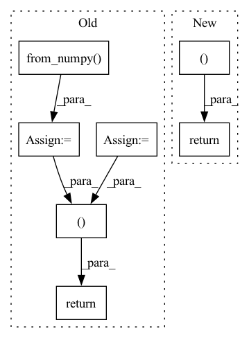

Pattern ID :19421

Before Change
if n_chan_ref > n_chan_est:
SDR = SDR.transpose(-2, -1)
SIR = SIR.transpose(-2, -1)
SAR = SAR.transpose(-2, -1)
SIR_npy = SIR.cpu().detach().numpy()
SDR_out = SDR.new_zeros(b_shape + (n_chan_out,))
SIR_out = SIR.new_zeros(b_shape + (n_chan_out,))
SAR_out = SAR.new_zeros(b_shape + (n_chan_out,))
p_opts = np.zeros(b_shape + (n_chan_out,), dtype=np.int64)
for m in np.ndindex(b_shape):
dum, p_opt = _linear_sum_assignment_with_inf(-SIR_npy[m])
SDR_out[m] = SDR[m + (dum, p_opt)]
SIR_out[m] = SIR[m + (dum, p_opt)]
SAR_out[m] = SAR[m + (dum, p_opt)]
p_opts[m] = p_opt
p_opts = pt.from_numpy(p_opts).to(SDR_out.device)
return SDR_out, SIR_out, SAR_out, p_opts
def _linear_sum_assignment_with_inf(
cost_matrix: np.ndarray,
After Change
if return_perm:
return (loss_out,) + tuple(args_out) + (p_opt,)
else:
return (loss_out,) + args_out
def _linear_sum_assignment_with_inf(
In pattern: SUPERPATTERN
Frequency: 3
Non-data size: 7
Instances
Fragment ID: 63412103
Project Name: fakufaku/torchiva
Commit Name: d2b2bceef6944715a6274920e6ec7b0374367ccd
Time: 2022-01-31
Author: robin.scheibler@linecorp.com
File Name: torchiva/metrics.py
M Class Name: AnonimousClass
N Class Name: AnonimousClass
M Method Name: _solve_permutation(1)
N Method Name: _solve_permutation(3)
M Parent Class:
N Parent Class:
M File Name: torchiva/metrics.py
N File Name: torchiva/metrics.py
M Start Line: 204
M End Line: 234
N Start Line: 150
N End Line: 182
'>
Before Change
memmap_index = bisect(self.start_indices, idx) - 1
index_in_memmap = idx - self.start_indices[memmap_index]
image, trajectory_history, intent_pose, trajectory_future = tuple(map(lambda x: x[index_in_memmap], self.items[memmap_index]))
trajectory_history = torch.from_numpy(trajectory_history)
trajectory_future = torch.from_numpy(trajectory_future)
intent_pose = torch.from_numpy(intent_pose)
if self.img_transform:
image = self.img_transform(image)
trajectory_future_tgt = torch.cat((trajectory_history[-1:], trajectory_future[:-1])) // This is the tgt that is passed into the decoder, and trajectory_future is the label
return image.float(), trajectory_history.float(), intent_pose[:,:-1].float(), trajectory_future_tgt.float(), trajectory_future.float()
After Change
img_history, trajectory_history, intent, trajectory_future_tgt, trajectory_future = super().__getitem__(idx)
return img_history[-1], trajectory_history, intent, trajectory_future_tgt, trajectory_future
'>
Fragment ID: 63412134
Project Name: xushenlz/parksim
Commit Name: 424b7fab387350323b1e8ce1437ddfc34a90833c
Time: 2022-04-22
Author: lacayomatt@gmail.com
File Name: python/parksim/trajectory_predict/intent_transformer/dataset.py
M Class Name: IntentTransformerV2Dataset
N Class Name: IntentTransformerV2Dataset
M Method Name: __getitem__(2)
N Method Name: __getitem__(2)
M Parent Class: IntentTransformerDataset
N Parent Class: Dataset
M File Name: python/parksim/trajectory_predict/intent_transformer/dataset.py
N File Name: python/parksim/trajectory_predict/intent_transformer/dataset.py
M Start Line: 163
M End Line: 173
N Start Line: 128
N End Line: 130
'>
Before Change
lm_new = np.stack([lm_new[:,0],223-lm_new[:,1]], axis = 1)
// trans_params = np.array([w0,h0,102.0/s,t[0][0],t[1][0]])
no_mask_img = img_new
img_new = img_new * mask
input_img = img_new.astype(np.float32)
input_img = torch.from_numpy(input_img).permute(0,3,1,2)
return no_mask_img, input_img, cropped_img, box
def PreprocessNoMask(img, lm, lm3D, render_size=224):
w0,h0 = img.size
After Change
if box:
return img_new, cropped_img, crop_box
return img_new, cropped_img
'>
Fragment ID: 63412100
Project Name: yeongjoonju/cfr-gan
Commit Name: 6840d7a2588a39fce22c2c80665f3796945ac43c
Time: 2022-02-27
Author: yj_ju@korea.ac.kr
File Name: mmRegressor/preprocess_img.py
M Class Name: AnonimousClass
N Class Name: AnonimousClass
M Method Name: Preprocess(5)
N Method Name: Preprocess(5)
M Parent Class:
N Parent Class:
M File Name: mmRegressor/preprocess_img.py
N File Name: mmRegressor/preprocess_img.py
M Start Line: 81
M End Line: 102
N Start Line: 70
N End Line: 86